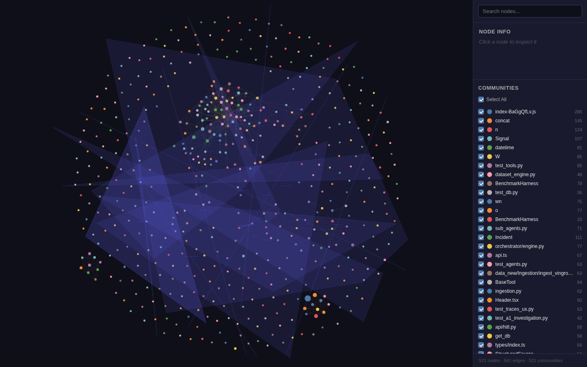

1PM — dành cho ai, vì sao, phạm vi
Dành cho ai
- PM / mentor: hiểu problem, in-scope / out-of-scope, d086 vs t086.
- Data / backend: contract parquet → DuckDB, ingest batch + realtime, ReAct, HITL, traces, eval vs GT.
- UX: hash routes, 4 persona demo, LLM ON/OFF.
Problem statement
VinGroup EV (VinFast telemetry, V-GREEN sạc, Xanh SM chuyến, NLP phản hồi) có lỗi cảm biến, lệch ngày, sai quan hệ bảng. Cần một console vận hành: phát hiện L1–L4, đề xuất luật, steward duyệt (HITL), cách ly hàng bẩn, và chấm điểm so với ground truth đã gắn nhãn — không phải SIEM, không phải kho WAP thứ hai.
Giải quyết (in-scope)
- Chất lượng dữ liệu đội xe điện VinGroup trên 4 bảng canonical.
- Parquet landing là SoT; DuckDB
main.*tái tạo từ parquet (migration 0003). - HITL: đề xuất luật → steward duyệt;
POST /hitl/execute= 403 (duyệt ≠ thi hành). - Traces gắn live session id (fallback
dataset:…). - Eval vs GT: pack Ngan 14 INC + 13 frozen RCA; LLM-judge tắt.
- Demo / tích hợp trên
d086.w9.nu.t086là production — không đụng.
Không giải quyết (out-of-scope)
- SIEM / SOC / ingest log an ninh.
- Thời tiết trong DB — không có cột weather; dùng làm probe “không trả lời được” / ảo giác.
- Kho WAP thứ hai (
sandbox.*,landing.rows, vibe_repair). Preview sandbox đọcquarantinecanonical. - ML baseline (cảm biến cổ điển vs LLM) — grill drop.
- LLM-as-judge mặc định — endpoint ép
llm_judge=False. - Secrets, mật khẩu, sshpass trong tài liệu này.
2Data contract
SoT = file parquet landing + fault_manifest.json. Migration src/db/migrations/0003_main_canonical_truth.sql phá schema cũ: drop vinfast_bms, vgreen_*, xanhsm_*; tạo lại 4 bảng main.*; remap quality_rules / quarantine / audit / job / pipeline sang tên canonical. Hàng fact cũ disposable.
| Bảng warehouse | Landing parquet | Ý nghĩa | Policy 0003 / canonical_policy |
|---|---|---|---|
main.ev_telemetry | ev_telemetry | BMS / VIN / SOC / nhiệt / GPS | SOC 0–100; nhiệt −10–85°C; điện áp ≥0 |
main.charging_sessions | acn_charging | Phiên sạc V-GREEN | power_kw 0–350; kWh ≥0 |
main.trips | ride_trips | Chuyến Xanh SM | km > 0; cước VND ≥0 |
main.nlp_feedback | feedback | Phản hồi (một lần) | sentence bắt buộc |
Hằng số code: CANONICAL_DATA_TABLES = (ev_telemetry, charging_sessions, trips, nlp_feedback) trong src/utils/table_utils.py. Run All / L1–L4 / Propose không đi clean.* hay quarantine.*.
Pack GT demo (eval)
landing_data/vingroup_pilot_landing_demo.parquet+landing_data/fault_manifest.json- 15 ngày · warmup 0–9 · 14 incident (L1:6 L2:2 L3:3 L4:3)
- Khóa:
incident_id,day_idx,layer,fault_family,dataset_table,row_index,column - Frozen RCA:
eval/rca_benchmark/frozen_testset_v3.json— 13 case. Không có ranked cause 2/3 trong GT.
3Backend — mermaid as-built + snapshot graphify
Module thật trên checkout v5 (không vẽ node bịa). Hub persistence: get_db() → DuckDBManager (src/db/connection.py).
Luồng chính
- Ingest batch:
POST /ingestion/warmupchạy ngày 0–9 rồi tự bật realtime ngày 10. - Ingest realtime:
realtime_runnertick ~1s, lô 50 hàng; WSdatatrust:realtime-tick. - ReAct: chat gọi
ReActEngine.run; HITL-stop: Propose xong thì FINISH, khôngclean_database. - Memory: inject
user_memorychỉ khi session mới (không tóm tắt LLM transcript). - HITL: Approve ghi
quality_rules+ quarantine canonical. Execute HTTP 403. - Eval: adapter Ngan GT; LLM-judge tắt; không harness ML.
Snapshot graphify tĩnh (không chạy Gemma mới)

graphify-out/graph.html (vis-network, 521 hub cộng đồng, 591 cạnh chéo).
Hub thật trong snapshot: Incident (111), Signal (107), test_tools.py (85), BaseTool (84),
BenchmarkHarness (78), orchestrator/engine.py (77), sub_agents.py (71),
ingestion.py (62), api/hitl.py (58), get_db (58).
Hub nhiễu minify (bỏ qua): index-BaGgQfLv.js, concat, n, o, W, pI.
Hyperedge có trên file: Data Ingestion Sources, Core Persistence Schema, Multi-Agent ReAct Bounded Loop, Evaluation Evidence Components.
4UX/UI — hash routes, role, LLM
HashRouter trong frontend/src/main.tsx. / redirect #/dashboard/ingestion.
| Hash | Trang |
|---|---|
#/landing | Landing marketing |
#/dashboard | Executive dashboard |
#/dashboard/ingestion | Timeline ngày · warmup · realtime |
#/workspace · #/chat/:id | Chat + inspector (traces / profiler / rules / HITL) |
#/operations/alerts|incidents|signals|traces | Nhóm alerts |
#/operations/rules|quarantine|governance|executions|snapshots | Nhóm governance |
#/operations/eval | Eval vs GT (Ngan pack, LLM-judge off) |
| route lạ | Navigate về / |
Persona seed (tên only — Q7=B)
| Role UI | Username | Được | Không |
|---|---|---|---|
| Admin | admin@datatrust.os | đọc, profile, propose, duyệt, reset DB | — |
| Analyst | analyst@datatrust.os | profile, propose, eval | duyệt HITL (403), reset |
| Steward | steward@datatrust.os | propose + duyệt + quarantine | reset (Admin) |
| Viewer | viewer@datatrust.os | chỉ đọc | Approve, Run All ghi, reset |
Backend còn Auditor / auditor@datatrust.os (đọc + review). Modal 1-click chỉ 4 persona trên. Không ghi mật khẩu ở đây. Nhãn “department” trên modal là copy demo — chưa có RBAC phòng ban.
LLM ON / OFF
Nút header ghi localStorage datatrust-use-llm, event datatrust:llm-mode-changed. OFF = rule heuristic / inventory. ON = ReAct Gemini (kill switch server LLM_KILL_SWITCH, trần token ~10k). Eval GT luôn tắt LLM-judge.
5Đã implement vs khoảng trống
Đã có trên v5 / d086 QA
- 4 bảng canonical + 0003 + parquet SoT.
- Warmup batch 0–9 + realtime ngày 10+.
- ReAct + traces live session + actor PROFILER/PROPOSER.
- HITL no-autoboot; execute 403; sandbox GET đọc quarantine.
- Memory inject đầu session; GET
/api/v1/memory. - Panel
#/operations/eval: detection P/R/F1 ~0.667 / 1.0 / 0.80 (14 INC, fn=0); location/time; frozen RCA 13/13; LLM-judge off. - RBAC Admin / Analyst / Steward / Viewer trên d086.
- LLM ON PONG / OFF inventory; chat abort.
- WAL: xóa
.walthôi, không xóa.db. - Run All Propose: đã vá trên checkout — chỉ bảng
maincanonical, không lồng detect, timeout LLM → heuristic. Commitc4c9bd3/4a38993trên nhánhfix/v5-runall-propose-hang.
Còn thiếu / cần xác nhận
- Run All Propose treo (nếu còn trên d086 live): workspace liệt kê
clean.*/quarantine.*, L1 “No signal config”, Propose không ra HITL. Vá đã có trong repo — cần docker-cp/bind-mountsrclên d086, không rebuild image backend. - GT không có cause xếp hạng 2/3 — top-3 hiện là family rank vs một
ground_truth_cause. - Phòng ban thật: chưa có cột org trên JWT / row-scope VinFast vs Xanh SM.
- Hai
BenchmarkHarnesstrùng tên (eval vs reliability) — panel GT dùng adapter Ngan, không C0/C1/A1 trip dirty. get_db()god-node: đổi schema = blast radius toàn API.- Cố ý không làm: SIEM, weather-in-DB, WAP warehouse, ML baseline, LLM-judge default, secrets trên t086.
6Cách chạy (high level, không secret)
Demo đội — d086
- UI: https://d086.w9.nu/
- Trang này: https://d086.w9.nu/onboarding.html
- API health:
https://d086.w9.nu/health(nginx proxy). - Đăng nhập 1-click:
admin@datatrust.os·analyst@datatrust.os·steward@datatrust.os·viewer@datatrust.os. - Không dùng
t086.w9.nucho onboarding / deploy v5.
Local
uv sync uv run uvicorn src.main:app --host 0.0.0.0 --port 8000 --reload cd frontend && pnpm install && pnpm dev
Copy .env.example → .env trên máy bạn. Không dán key vào chat / HTML. Bật/tắt LLM bằng nút header. Reset DB chỉ Admin.
Docker compose (cổng mặc định 3000/8000) là path local — host d086 dùng compose datatrust-dev cổng 3001/8001, bind-mount ./src, frontend docker cp. Không rebuild image backend khi đĩa chặt.